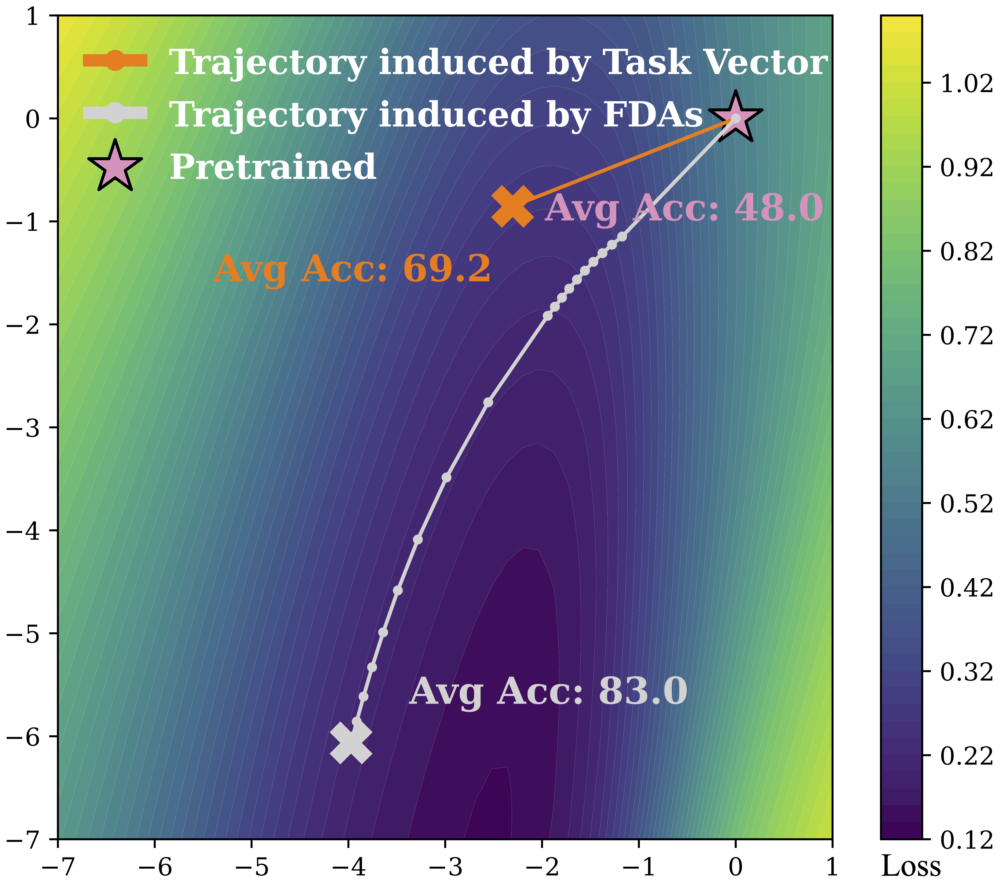

Model Merging has been an intriguing post-training strategy for integrating knowledge
from existing checkpoints of a shared foundation model. Existing methods focus on
operations in the parameter space (i.e., task vectors), thereby suffering from the complexity
of the parameter space. To explore more knowledge utilizations, we propose
Functional Dual Anchors (FDAs), a framework (Figure 1(a)) that instead models
the knowledge in the input-representation space. Specifically, FDAs are synthetic inputs
whose induced gradients align with task vectors, capturing task-specific functional shifts
relative to the pretrained model. Then, we use the FDAs to adapt the pretrained model. FDAs provide an alternative perspective on
model merging by extending input-space modeling to this setting and bridging joint
multi-task training and post-hoc merging.
Intuitive Understanding and Motivation of FDA

To gain an intuitive understanding of FDAs, we compare their optimization trajectories with those of task arithmetic in Figure 2.
We treat the obtained FDAs as finetuning data and optimize the model parameters accordingly.
As shown in the right figure, optimizing with FDAs moves the model closer to the local minima of the loss landscape (computed over eight downstream datasets).
While task vectors provide useful guidance from the pretrained model, they quickly drift away from the loss basin,
whereas FDAs consistently guide optimization toward more favorable regions.
Moreover, by capturing functional shifts in the input space, FDAs offer greater robustness for model merging.
Unlike task vectors, which are sensitive to initialization and can drift under different starting points,
FDAs exhibit robustness to such variations, facilitating more reliable model merging.
FDAs Provide More Flexible and Robust Merging Direction
Figure 2: Performance comparison of FDAs with other model merging methods.
To validate the effectiveness of the merging direction provided by FDAs, we use FDAs to adapt the pretrained model and compare the multi-task performance
with its dual framework (i.e., task vectors). To show the robustness, we initialize the pretrained model by the merged parameters, which are derived from data-free
task-vector-based methods. We consider three data-free methods, TA (task arithmetic), TSVM, WUDI. The former one is the classical method, while the latter two are the
current state-of-the-art methods. We present some results. More results can be found in our paper.
In vision tasks, FDAs achieve comparable or superior accuracy to joint multi-task training while maintaining
full modularity and no access to original data. For NLP tasks on the GLUE benchmark, FDAs demonstrate smoother
merging trajectories and less performance degradation under conflicting task updates. These results highlight the robustness and generality of FDAs as a unifying framework for functional model merging.
A Practical Algorithm for FDAs
The practical algorithms for FDAs involve two main stages: constructing FDAs and adapting with FDAs.
In the first stage, FDAs are built for each downstream checkpoint. This stage can be deemed as projecting task-specific knowledge into the input–representation space.
In the second stage, these FDAs are used to adapt the model, i.e., integrate knowledge across multiple tasks.
1. Construction
Given the pretrained model $\varphi(\boldsymbol{\theta}_0)$ and the corresponding finetuned checkpoint
$\varphi(\boldsymbol{\theta}_i)$, we construct the FDAs $\{\boldsymbol{x}_{ij}\}_{j=1}^n$ for $\varphi(\boldsymbol{\theta}_i)$
via solving the following optimization problem:
where $\mathrm{cos\_dist}(\mathbf{A},\mathbf{B}) = 1 -
\frac{\mathrm{vec}(\mathbf{A})^\top \mathrm{vec}(\mathbf{B})}
{\|\mathbf{A}\|_F \|\mathbf{B}\|_F}$,
$\mathrm{vec}$ denotes the operation that vectorizes a matrix into a vector
in row-major order, and $\mathrm{Dist}(\cdot)$ denotes a differentiable distance
function measuring the representation discrepancy between
$\varphi(\boldsymbol{\theta}_0)$ and $\varphi(\boldsymbol{\theta}_i)$.
The gradient-based iterative optimization methods are adopted. It is well known that gradient-based methods are sensitive to initialization. Thus, we analyze the optimization dynamics of anchors on a linear encoder and derive a principle for
initialization.
Principle
An effective initialization strategy should limit the energy of the initialization point within the tail subspace spanned by the task vector.
Based on this principle, we derive two practical initialization schemes: linear weight sampling $\boldsymbol{x}_{ij}=(\boldsymbol{W}_i)_{l_j,:}\$ and scaled Gaussian sampling $\vx_{ij} = \sigma \cdot \tilde{\boldsymbol{x}}_{ij},
\tilde{\boldsymbol{x}}_{ij} \sim \mathcal{N}(\mathbf{0}, \boldsymbol{I}_d)$, where $\boldsymbol{W}$ denotes the weight matrix.
2. Adaptation
The adaptation process with FDAs is the dual process of the above Construction process. When the merged model is initialized by the pretrained checkpoint,
the adaptation process is to optimize the following objective:
$$
\min_{\boldsymbol{\theta_0}}
\sum_{i=1}^m \sum_{j=1}^{n}
\mathrm{Dist}\!\Big(
\varphi(\boldsymbol{\theta_0}, \mathbf{x}_{ij}),
\varphi(\boldsymbol{\theta}_i, \mathbf{x}_{ij})
\Big),
$$
Knowledge encoded in the FDAs
Figure 2: Performance comparison of FDAs with other model merging methods.
To evaluate the effectiveness of Functional Dual Anchors (FDAs), we conduct extensive experiments across
multiple modalities, including vision, natural language understanding (NLP), and natural language generation (NLG).
FDAs consistently outperform traditional parameter-space merging methods such as Task Arithmetic, DARE, and WUDI
across a wide range of datasets and architectures.
In vision tasks, FDAs achieve comparable or superior accuracy to joint multi-task training while maintaining
full modularity and no access to original data. For NLP tasks on the GLUE benchmark, FDAs demonstrate smoother
merging trajectories and less performance degradation under conflicting task updates. For large-scale language
models, FDAs enable effective functional adaptation between experts in domains such as mathematics and code.
These results highlight the robustness and generality of FDAs as a unifying framework for functional model merging.
BibTeX
@inproceedings{shi2026fda,
title={MODEL MERGING WITH FUNCTIONAL DUAL ANCHORS},
author={Shi, Kexuan and Wen, Yandong and Liu, Weiyang},
booktitle={International Conference on Learning Representations (ICLR)},
year={2026}
}
References
Wang, T., Zhu, J. et al. (2018b). Dataset Distillation. ICLR.
Cazenavette, G., et al. (2022). Dataset Condensation with Gradient Matching. CVPR.
Liu, Y., et al. (2017a). Iterative Machine Teaching. NeurIPS.
Qiu, X., et al. (2023). Teaching via Iterative Distillation. ICML.
Zhao, B., et al. (2021). Dataset Condensation with Gradient Matching. ICLR.
Zhao, B., & Bilen, H. (2023). Synthesizing Informative Data for Efficient Learning. CVPR.
Shin, H., et al. (2017). Continual Learning with Deep Generative Replay. NeurIPS.
Yu, C., et al. (2023). Continual Learning with Functional Regularization. ICML.